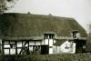
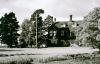
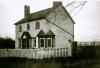
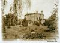
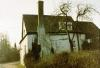
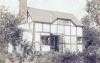

Mathon is currently in maintenance. During this maintenance it is not possible to change site content (like comments, pages and users).
Primary links
Home
Forums
History
Mathon People From 1900
The Old Community
Galleries
Life in Mathon
Mathon Old Community
Mathon People From 1900
Mathon in Old Photos
Views of Mathon
Register / Login
Contact
Home
Image galleries
Mathon in Old Photos
Mathon 94
Mathon 95

Mathon 96
Mathon 97

Mathon 98

Mathon 99

Mathon Court 1909

Tanhouse, Southend Lane in 1977

Twynings Cottage-date unknown. The little girl could well be Gladys Minton (nee Alford) who was born in the cottage in 1905.
« first
‹ previous
…
5
6
7
8
9
10
11
12
13
Book navigation
Mathon's History